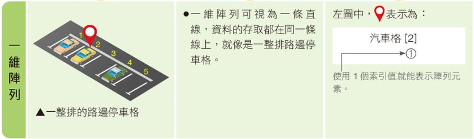
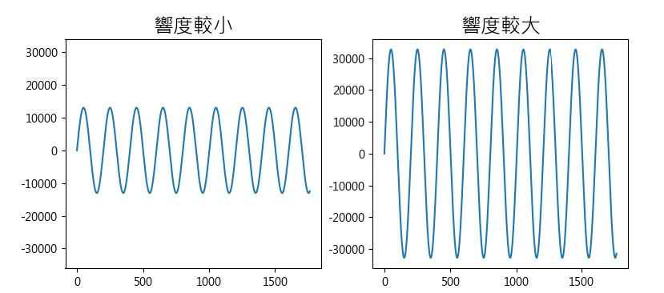
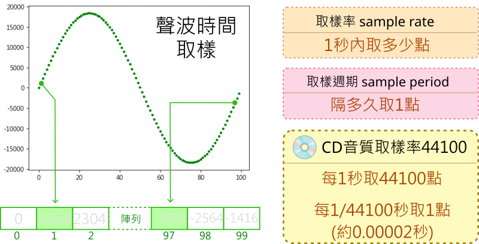

📚 陣列與影音數位化
- 當我們使用電腦來處理影像與聲音時，常常會使用相關的影像及音訊處理軟體。

- 你曾經想過嗎？電腦在播放音樂、剪裁音樂、顯示照片、影片編輯時，它到底做了什麼計算？聲音與照片是如何以數位資料來表示呢？
- 在本課程中，我們將探索影音數位資料與陣列的關係。
關於視覺影像與聲音訊號
- 本課程使用到整合後的教學函式庫，如下連結
- Py4t 視覺影像 說明、範例程式
- Py4t 聲音訊號 說明、範例程式
📙 陣列資料結構
陣列是什麼
- 在資訊科學中，陣列(Array)是一種資料結構，是由相同資料類型(整數、字串或浮點數等)元素所組成。
- 常見的陣列種類可分成1、2、3維陣列，讓大量資料的排列方式更多元，在生活中都有實際的應用情形。
- 


- (資料來源:1)
多維陣列

- (資料來源:2)
- NumPy是Python的第三方程式庫。支援多維陣列與矩陣運算，還有針對陣列運算的數學函式庫。是Python科學運算相關領域中，非常重要與基礎的套件。
Python的幾種陣列工具
-

-
(資料來源:2)
-
1、2、3維陣列在numpy中的示意圖，利用陣列的shape屬性，可以得知陣列的維度與大小。
-

-
(資料來源:3)
-
1維陣列的索引、切片操作示例如下：
-

-
(資料來源:4)
-
2維陣列的索引、切片操作示例如下：
-
(資料來源:5)
接下來要使用陣列來處理聲音的數位資料。
📗 音訊與1維陣列(2)
聲音要素
- 聲音是一種由振動產生的波動，聲波通過空氣的傳播，當耳朵接收到聲波時，就會讓我們聽見聲音。
- 那聲音有什麼基本的組成要素呢？一起來看看下面的影片：
- (1分48秒, 資料來源:6)
- 經由影片的說明，我們可以得知，聲音的三要素是「音調」、「響度」與「音色」。
-
聲波不同的振動頻率，會產生不同的音調，讓我們感受到高音與低音。
-

-
(資料來源:6)
-

-
特定的頻率，可依規則組成不同的音階，讓聲音變成悅耳的音樂，音階與頻率的對照表如下：
-

-
(資料來源:7)
-
聲波的振動幅度大小，會產生不同的聲音響度，讓我們感受到大聲與小聲。
-

-
(資料來源:6)
-

-
不同聲源的聲波有不同的波形，會產生不同的音色，讓我們可以分辨出如人聲與樂器聲的差異。
-

-
(資料來源:6)
聲音訊號
- 聲音訊號可以定義為「隨著時間改變的振幅大小」，在經過取樣與量化的處理後，就可以將聲音數位化。音訊的數位聲波資訊可以利用「1維陣列的資料結構」來存放。為了更清楚地觀察聲波變化，我們可以將音訊的資料陣列以圖表的方式來呈現。
-
在這邊，我們會使用matplotlib圖表函式庫來呈現陣列資料，在呈現的圖表中，如果使用不同的檢視方式，就可以巨觀或微觀的角度，來觀看大量的資料。
-

-
真實世界中的聲波是連續的類比訊號，如果要將聲波數位化，變成一個個離散的數位訊號，就必須對聲音訊號做「取樣」的動作，取樣的資料因為具有相同型態，多以陣列的資料結構存放。
-

-
了解了「取樣率」與「取樣週期」後，看看下圖中，在常見的數位音訊取樣率。數位音訊取樣率越高，會越接近原始的聲音，所以播放的品質也會越好。
-

-
(資料來源:8)
-
在將聲音訊號取樣時，取到的值是聲音的振幅大小(與響度有關)，這個動作是「量化」，可以使用不同位元數來表示量化的值。採用的位元數越高，振幅會有更細膩的變化，音訊的品質就越好。
-

-

-
- 自然界中的聲音可以弦波來表示，弦波是類比訊號的代表。
-
- 方波是只有「低」與「高」這兩種變化，常出現在電子訊號的處理，是數位訊號的代表。
-
- 如果將量化值以隨機方式產生，就會是發出沙沙聲的雜訊。而其中的白噪音是一種均勻分布，平均值為0，樣本之間互相獨立的均勻雜訊。根據一些研究顯示，在一定的條件下，白噪音可以幫助睡眠(註9)。
-
請動手實作程式。
範例程式 聲音訊號 - - - - - - - (音訊與1維陣列 1/2 新檔)
【長度14:47 章節時間如下】
- 0:00 存檔、切換便利貼
- 1:00 聲音、陣列與圖表
- 5:50 取樣與量化
- 10:34 陣列切片與音源

玩轉聲音
- 我們使用人類說話聲、鋼琴聲、小提琴聲，來觀察不同聲音的不同波形，不同波形的聲音會產生不同的音色。

個人一小步，人類一大步
- 1969年7月21日凌晨2點56分（UTC），美國太空人阿姆斯壯的左腳踏上了月球，並說道：「這是一個人的一小步，卻是人類的一大步」。本課程使用這個聲音做為範例。
- （That's one small step for man, one giant leap for mankind.）
- 詳見：維基百科
-
聲音數位化後，就可以利用電腦來做各種處理，讓聲音陣列中的取樣資料經由運算後，產生不同的效果。
-
淡出及淡入是常見的音訊處理方式，讓聲音的開始、結束或連接不會太突兀。淡出與淡入處理的波形圖如下：
-
聲音反轉，是把聲音的取樣資料，反向播放。
-

-
兩個聲音可以做串接的處理，下面是兩種波形的串接示範：
-

-
如果要讓聲音串接得更平順，可以使用交叉淡化，兩個聲音交界時，會做淡化及交錯的處理。
-

-
使用聲音混合(或覆疊)，可以將兩種聲音合在一起。
-

-
請動手實作程式。
範例程式 玩轉聲音 - - - - - - - (音訊與1維陣列 2/2 新檔)
【長度11:42 章節時間如下】
- 0:00 存檔、切換便利貼
- 0:56 wav檔、陣列與聲波圖
- 3:32 不同聲色與波形
- 5:46 單一聲音處理
- 7:47 兩種聲音處理
- 10:35 儲存wav檔

📘 灰階與2維陣列(2)
灰階點陣
- 影像可以定義為「隨著空間座標改變的亮度值」，電磁波頻譜中的一小段是可見光，可見光波傳播到人類的眼睛時，我們就會感覺到光的顏色。
- 數位影像，將類比影像資料，以2維空間的方式取樣並將色光的亮度值量化，就會形成點陣的方陣資料，儲存在如陣列的資料結構中。

- (資料來源:10)
-
為求簡單好理解，這邊先使用灰階影像，只有一個顏色通道，量位位元深度使用8個位元，數值範圍的是從不發光(黑0)到發光(白255)。從下圖可以看出2維陣列與灰階點陣圖的關係。
-

-
(資料來源:11)
-
numpy多維陣列中的資料有不同的類型，有不同的位元組大小，能存放的資料範圍也不同。
| 資料類型 | 位元組 | 說明 |
|---|---|---|
| uint8 | 1 | 非負整數，範圍0～255 (在課程中用來存放影像資料) |
| int16 | 2 | 整數，範圍-32768～32767 (在課程中用來存放音訊資料) |
| float64 | 8 | 雙精度浮點數(可使用小數) |
-
因整數類型有固定的數值範圍，當超過最大值時，就會產生溢位(overflow)的情形，看看下圖的計數器，再加1之後會變成多大呢？
-

-
(資料來源:12)
-
numpy多維陣列中的uint8，當發生超過最大值255的溢位情形時，會再從0開始；反之，當發生超過最小值0的溢位情形時，則會從255開始
一起來動手寫程式。
範例程式 灰階點陣 - - - - - - - (灰階與2維陣列 1/2 新檔)
【長度9:41 章節時間如下】
- 0:00 存檔、切換便利貼
- 1:05 2維陣列與資料類型
- 3:04 灰階點陣圖與顏色條
- 7:12 for迴圈改變點陣圖

灰階切片
- 利用python的切片語法(slicing)，我們可以取出2維陣列的一塊區域。

- (資料來源:13)
-
將陣列經過各種計算處理，顯示出來的圖片也會跟著改變。以下是模糊的處理，也可以稱為平滑處理，具有影像去噪的效果。
-

-
平滑處理通常是運用卷積運算(Convolution)，利用一個卷積核掃過整張圖，來得到新的圖片陣列。
-
(資料來源:14)
-
以下是將陣列中的值，以亮度最大值(255)減去，會得到負片效果，圖片亮度反轉。
-

-
下圖是將陣列做Canny邊緣偵測的運算處理。
-

-
利用陣列切片與運算效果來處理照片，請動手寫出程式。
範例程式 灰階切片 - - - - - - - (灰階與2維陣列 2/2 新檔)
【長度9:46 章節時間如下】
- 0:00 存檔、切換便利貼
- 0:56 讀取顯示圖片、列印陣列
- 3:11 切片調整亮度
- 5:01 切片糢糊處理
- 6:29 切片負片效果
- 8:17 切片邊緣偵測

📙 彩色影像與3維陣列(2)
通道分離
- 彩色影像的亮度分為3個通道，分別為藍(Blue)、綠(Green)、紅(Red)三層，所以彩色影像可以使用3維陣列來表示。
-
(資料來源:15)

- (資料來源:16)
-
請著將彩色圖片轉為3維陣列，利用陣列的處理，分離出藍綠紅的3個通道。
範例程式 通道分離 - - - - - - - (彩色影像與3維陣列 1/2 新檔)
【長度7:55 章節時間如下】
- 0:00 存檔、切換便利貼
- 0:55 讀取顯示圖片、列印陣列
- 3:11 藍色通道分離
- 5:09 綠色通道分離
- 6:26 紅色通道分離

視訊分割
- 在一些商場，有時可以看到，由多個顯示器組成的數位顯示牆(電視牆)。

-
利用陣列切片的處理，將攝影機擷取到的影像，切成4塊，模擬數位顯示牆(電視牆)的效果。
-

-

-

-

-
動手寫出程式。
範例程式 視訊分割 - - - - - - - (彩色影像與3維陣列 2/2 新檔)
【長度10:39 章節時間如下】
- 0:00 存檔、切換便利貼
- 0:50 設置攝影機、陣列形狀
- 1:39 攝影機畫面、左右翻轉
- 2:54 分割變數設值
- 5:42 分割畫面1(左上)
- 6:54 分割畫面2(右上)
- 7:51 分割畫面3(左下)
- 8:55 分割畫面4(右下)

-
圖片來源：康軒教科書 國中二上科技領域資訊科技課本第52頁圖片 ↩
-
NumPy 函式庫, https://numpy.org/ ↩↩
-
6 Best NumPy Online Courses for Beginners in 2022, https://medium.com/javarevisited/6-best-online-courses-to-learn-numpy-for-beginners-60120f611e06 ↩
-
NumPy Illustrated: The Visual Guide to NumPy, https://betterprogramming.pub/numpy-illustrated-the-visual-guide-to-numpy-3b1d4976de1d ↩
-
Python NumPy Tutorial: An Applied Introduction for Beginners, https://www.learndatasci.com/tutorials/applied-introduction-to-numpy-python-tutorial/ ↩
-
Make Maker . Arduino 蜂鳴器發聲, http://jiader.blogspot.com/2018/08/arduino.html ↩
-
hello醫師, 白噪音可助眠～這3種潛在影響要注意, https://helloyishi.com.tw/sleep/a-good-nights-sleep/what-does-white-noise-affect-us/ ↩
-
Basic Properties of Digital Images, https://hamamatsu.magnet.fsu.edu/articles/digitalimagebasics.html ↩
-
Image – 2D pixel array, https://www.researchgate.net/figure/Image-2D-pixel-array_fig4_267204802 ↩
-
MIT News, Better debugger, https://news.mit.edu/2015/integer-overflow-debugger-outperforms-predecessors-0324 ↩
-
NumPy: the absolute basics for beginners, https://numpy.org/devdocs/user/absolute_beginners.html ↩
-
Computer Vision for Beginners: Part 2, https://towardsdatascience.com/computer-vision-for-beginners-part-2-29b3f9151874 ↩
-
機械視覺: 在python上操作opencv-基礎 – Q. Y. Wu Code World, https://qingyangdotblog.wordpress.com/2017/08/28/%E6%A9%9F%E6%A2%B0%E8%A6%96%E8%A6%BA-%E5%9C%A8python%E4%B8%8A%E6%93%8D%E4%BD%9Copencv-%E5%9F%BA%E7%A4%8E/ ↩
-
Perform Basic Image Processing using Python3 and OpenCV, https://tbhaxor.com/basic-image-processing-using-python3-and-opencv/ ↩